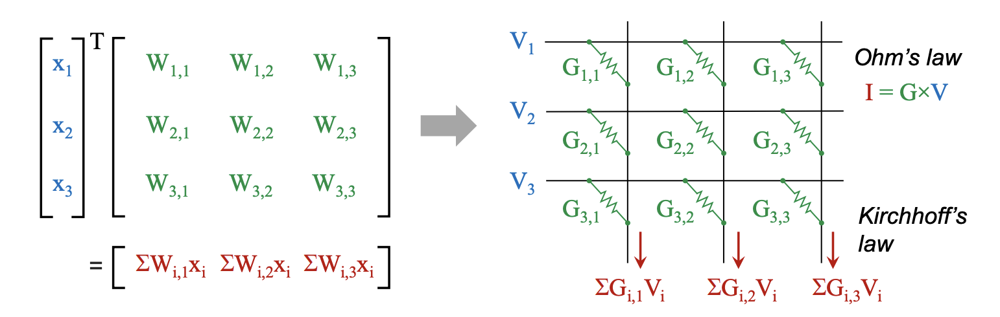
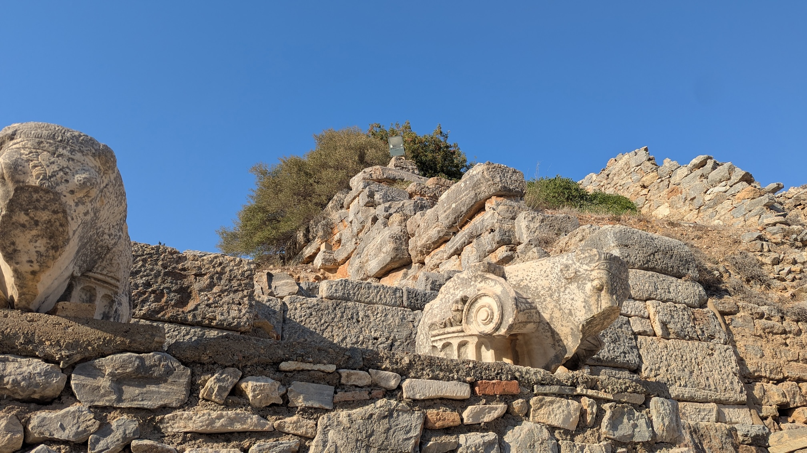
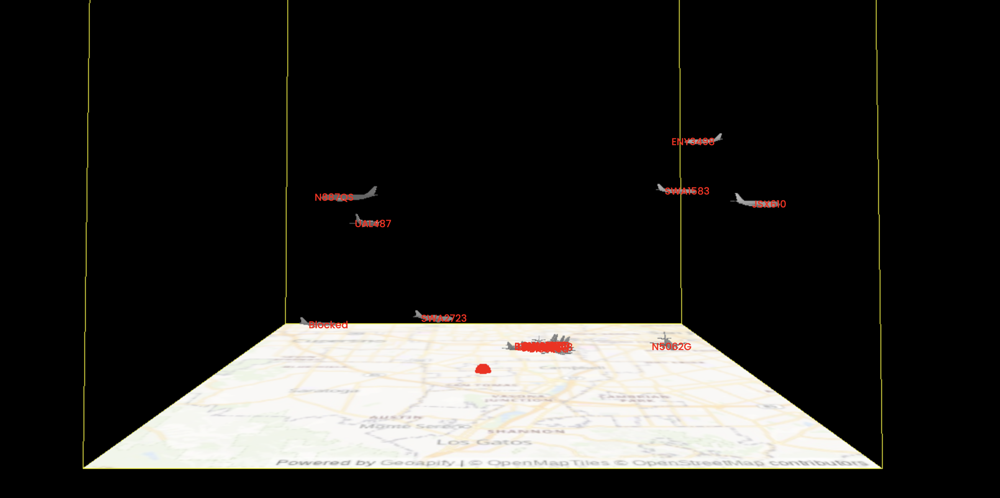
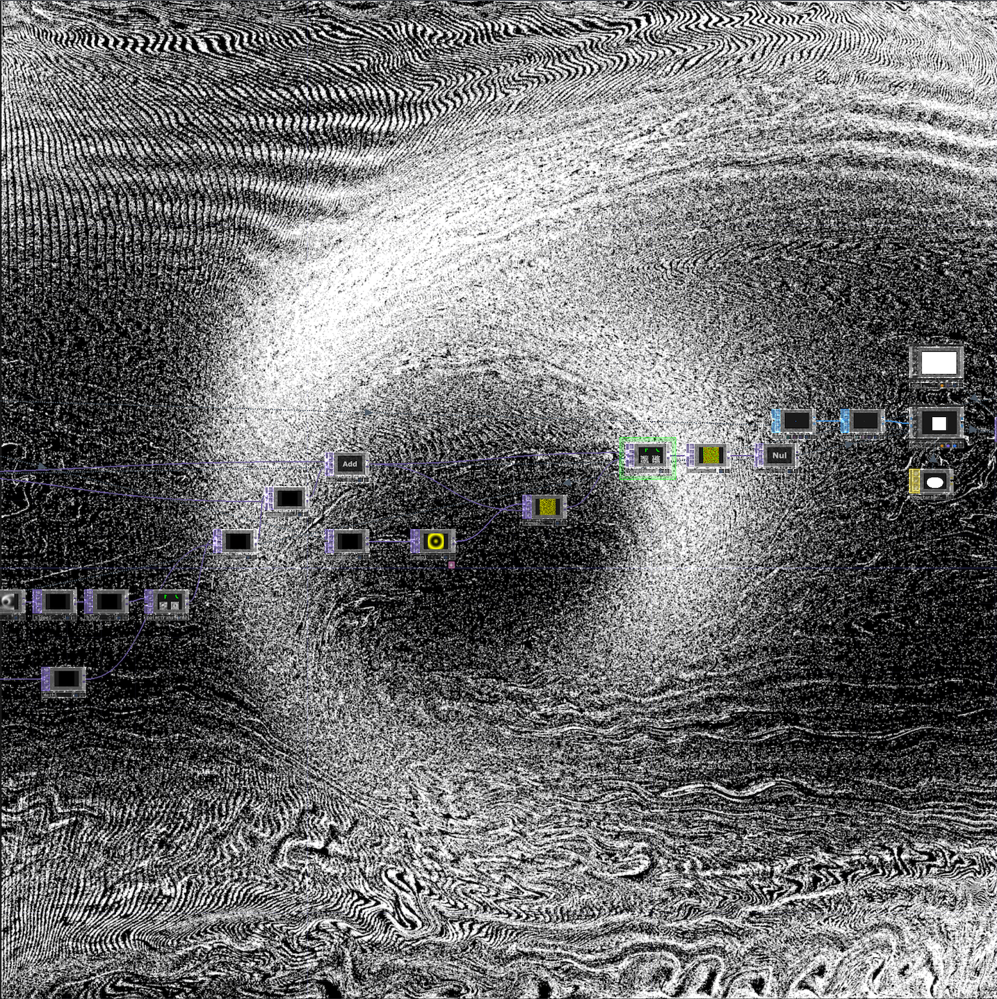

VADL Flight Software
Integrated payload control system. Lab-tested. Flight-proven.
C/C++RTOSEmbedded Systems
Hello There!
I am an undergraduate student at Vanderbilt University with a diverse set of interests in verticals surrounding computing in aerospace. Really though, I have tried it all; from energy and insider trading analysis, to bioinformatics and packet radio. The common link is the goal of making a meaningful impact in any task I am given. My current work is focused on the development and research of embedded flight software, edge-AI and autonomy on constrained vehicle platforms, and data pipelining and analysis from remote sensing systems. I like the insights that can be reached with continuous testing and interation, as well as effective data presentation and visualization. In addition to my software background, I value hands-on long-duration integrated testing on hardware platforms.
Thanks for checking out my site!
Integrated payload control system. Lab-tested. Flight-proven.

Investigation of neural network performance under TID space radiation.

Training a transformer image model for the classification of ancient pottery fragments from Levant region dig sites.

Vite + Flask + Three.js app that visualizes live flights; deployed on Cloud Run.

Lightweight 2D airflow lines around silhouettes; OpenCV contours → projector mapping.